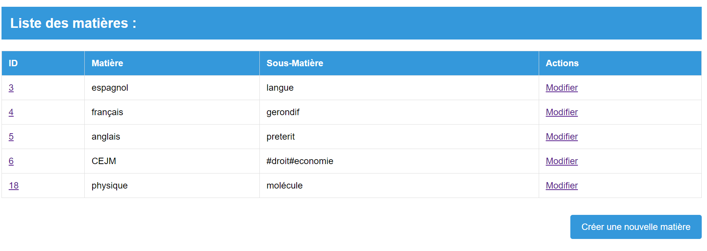

Projet HelpOrt

Dans ce Tp, nous avons gérer des demandes d'aides entre élèves
- Objectif:Associer des demandes avec des compétences et en créer des soutiens
- Moyens: Scene builder pour l'interface et IntelliJ pour le code
- Contraintes: Ce tp a été réaliser en groupe de 2
- Étapes: Nous avons commencé par créer l'interface, puis nous avons fait une liste des choses a faire et ensuite nous avons codé des fonctionnalités
- Résultat: Nous avons pu associer des demandes avec des compétences et en créer des soutiens